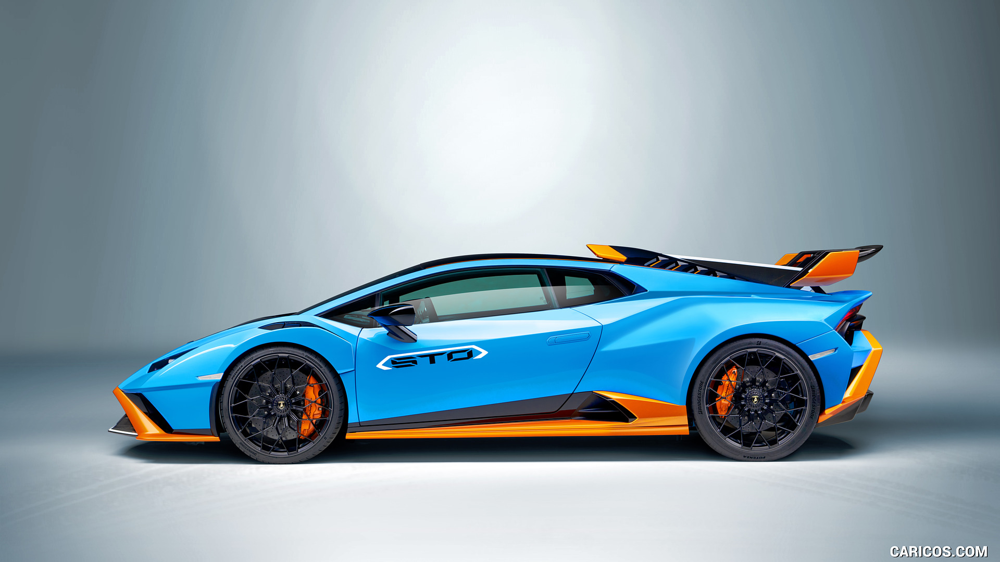
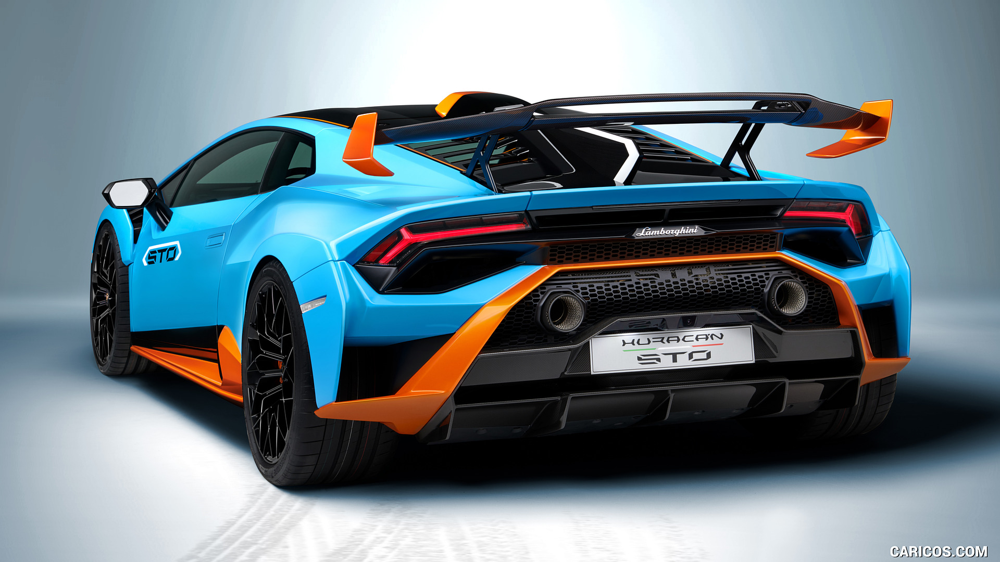
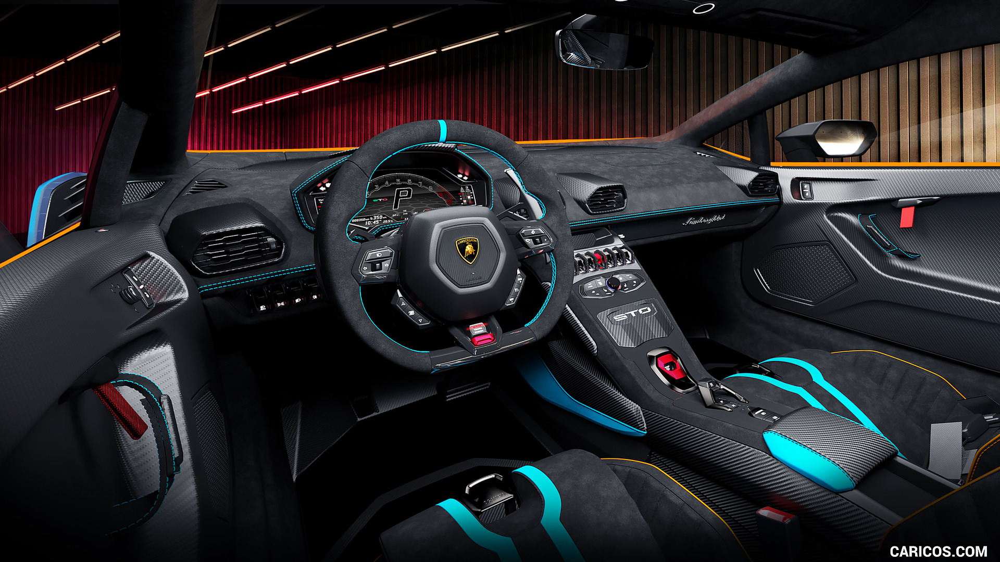

Inspired by Lamborghini’s racing division, the Huracán STO combines lightweight engineering with aggressive aerodynamic precision.

Every contour of the STO is designed to maximize airflow, stability, and performance at extreme speeds.

Alcantara, exposed carbon fiber, and race-inspired controls place the driver at the center of the experience.
Contact ATLAS Motors for private acquisition inquiries.